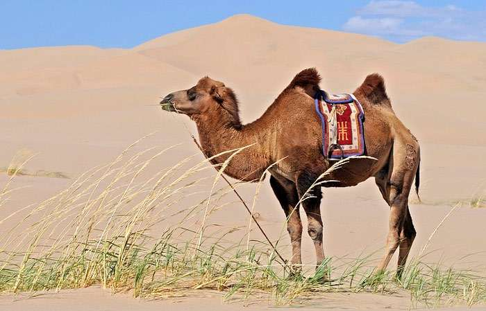

Двугорбый верблюд или бактриан издавна является важным домашним животным во многих районах Азии. Домашний двугорбый верблюд встречается преимущественно в степных и полупустынных районах восточной части Центральной и Средней Азии, Монголии и соседних территорий России и Китая; мировое поголовье бактрианов превышает 2 млн. Используется как вьючное и тягловое животное, а также как источник молока, мяса и ценной шерсти. В диком виде сохранился в очень малом числе.
Популяция диких верблюдов насчитывает лишь несколько сотен голов. Бактриан хорошо приспособлен к обитанию в условиях резко континентального сухого климата с жарким и сухим летом и очень морозными и снежными зимами. Особенности организма позволяют ему необычайно долго обходиться без воды и довольствоваться самым грубым и малопитательным кормом.
Суровые зимы двугорбый верблюд также переносит сравнительно легко благодаря исключительно густой шерсти.
